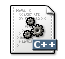

CS212: Object Oriented Analysis and Design
July - November, 2016
Objectives
- To understand the Object-based view of Systems
- To develop robust object-based models for Systems
- To inculcate necessary skills to handle complexity in software design
- Ability to analyze and model software specifications.
- Ability to abstract object-based views for generic software systems.
- Ability to deliver robust software components.
Course content
- Introduction to OOAD: Basic notion of objects, Multiple Views of Objects, Contrasting with Procedural Computation, Client-Server/Message Passing, Principles of OOAD, Abstraction Hierarchy, Decomposition Hierarchy, Member-Of
- Overview of Object-based Modeling: Unified Modified Language (UML): Structural Diagrams, Behavioural Diagrams
- Overview of C++: Procedural Extension of C, Objects, Classes and Encapsulation, Overloading, Inheritence & Polymorphism, Type Casting.
- Design-by-Contract: Introduction to Concepts of Design-by-Contract, Separation of Interface and Implementation by Design, Illustration of Design-by-Contract through Data Structure examples like Stack, Queue
- Standard Library of C++: Input / Output Streams, Strings: string, Data structures: Sequence containers, Container adaptors, Associative containers, Unordered associative containers
- Handling the Breakdown of Design-by-Contract: Exceptions to handle Contract violations, Exception handling in C, Exception handling in C++, Exception Classes in C++ Standard Library
- Templates: Function Templates, Class Templates, Partial Template Instantiation, Generic, Programming through Template Meta Programming
- Design Patterns: Introduction to DP through Iterator Pattern, DP Schema and Pattern Formulation, Common Patterns, Iterator, Singleton, Visitor, Abstract Factory, Factory Method
- Generic Programming in Standard Library of C++: Iterators, functional operators, algorithms
Text Books
- T1. Scott Meyers, Effective C++: 50 Specific Ways to Improve Your Programs and Designs, Addison-Wesley.
- T2. Scott Meyers, More Effective C++: 35 New Ways to Improve Your Programs and Designs, Pearson Education.
- T3. Bjarne Stroustrup, The C++ Programming Language, Addison-Wesley.
- T4. Andrei Alexandrescu, Modern C++ Design, Pearson Education India.
- T5. Erich Gamma, Richard Helm, Ralph Johnson, and John Vlissides, Design Patterns: Elements of Reusable Object-Oriented Software, Addison Wesley.
- T6. Russ Miles and Kim Hamilton , Learning UML 2.0: A Pragmatic Introduction to UML, O'Reilly.
- R1. Nicolai M. Josuttis, The C++ Standard Library: A Tutorial and Reference (2nd Ed), Addison-Wesley Professional, 2012
- R2. Matthew H. Austern, Generic Programming and the STL: Using and Extending the C++ Standard Template Library, Addison-Wesley Professional, 1999
- R3. David Abrahams and Aleksey Gurtovoy, C++ Template Metaprogramming: Concepts, Tools, and Techniques from Boost and Beyond, Addison-Wesley Professional, 2004
Lecture slides
| Sl. No. | Topic | Lecture slide | Demo |
| 1. | Recap of Programming Techniques |  | |
| 2. | Classes and Objects | ||
| 3. | Constructor and Destructors | ||
| 4. | Polymorphism - I | ||
| 5. | Polymosphism - II | ||
| 6. | Relationship between Classes | ||
| 7. | Runtime Polymorphism | ||
| 8. | Exception Handling | ||
| 9. | Console I/O | ||
| 10. | File I/O | ||
| 11. | Generic Programming | ||
| 12. | Standard Template Library | ||
| 13. | STL Container | ||
| 14. | Iterator | ||
| 15. | Algorithms | ||
| 16. | Namespace | ||
| 17. | Object Oriented Modeling | - |
Lab Assignements
| Assignment No. | Topic | Problem Statement |
| 1. | Recap of Prgramming concepts |
|
| 2. | Class and Objects with Dynamic Allocations | |
| 3. | Function and Operator Overloading |
|
| 4. | Inheritance |
|
| 5. | Mid Semester Lab exam |
|
| 6. | Virtual Function |
|
| 7. | Templates and Exception Handling |
|
| 8. | File Handling |
|
| 9. | STL |
|
| 10. | End Semester Lab Exam |
|
Microsoft Visual Studio Team Services (VSTS)
Commands to be executed in a sequence to get the source code from the VSTS server, implement, and upload.
Commands to be executed in a sequence to get the source code from the VSTS server, implement, and upload.
- mkdir
- cd
- git clone
(from VSTS online) - cd
- ls -l (To check the downloaded files)
- Now implement the .cpp files.
- git.checkout -b
- git branch
- git status
- git add
- git commit -m " Implemented cpp files"
- git push origin
- Go to VSTS online portal.
- Under the code tab, click on Pull Rrequest.